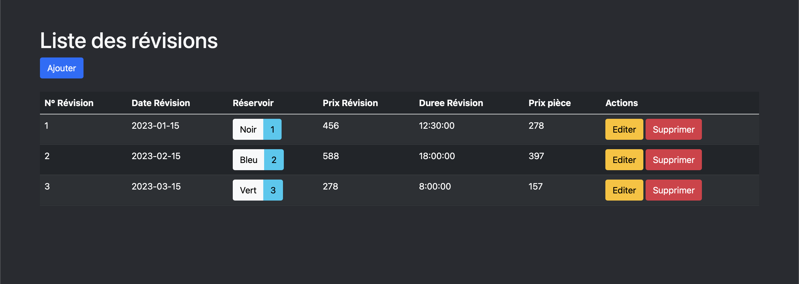
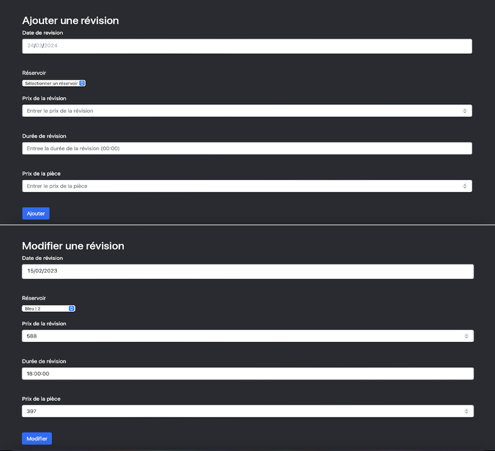
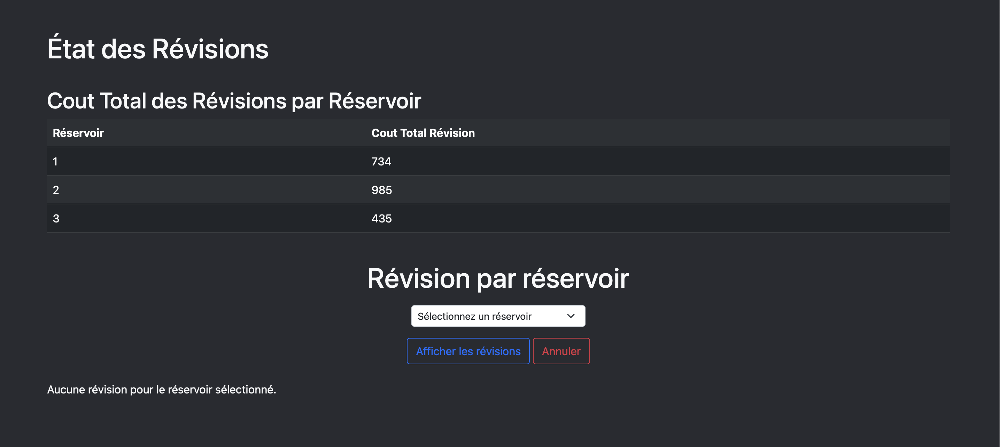
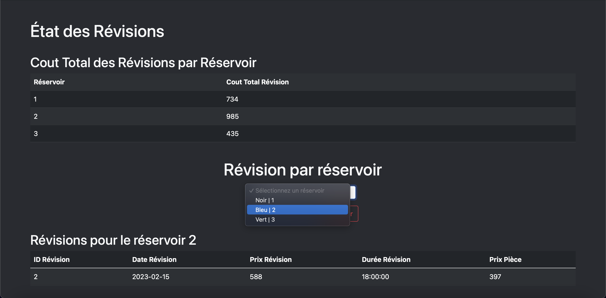

Concernant l'UE4, elle s'articule autour de la gestion de l'information avec des cours sur les bases de données et SQL, les mathématiques discrètes, les fondements de l'économie durable et numérique, et est complétée par une SAE dédiée à la conception et gestion de bases de données.
Dans le cadre de cette SAE, j'ai codé deux pages web pour un site : la première implémente un système CRUD, permettant la gestion dynamique des données (création, lecture, mise à jour, suppression), et la seconde utilise des "états" pour filtrer et présenter les données selon des critères définis. Ces "états" peuvent être utilisé pour générer des rapports, des factures, des statistiques ou tout autre type de sortie qui présente les données de manière structurée et significative.




Dans cette UE j'ai eu l'occasion grâce aux Travaux Dirigés et Travaux Pratiques qui m'ont offert une solide compréhension des bases de données. J'ai acquis une compétence pratique dans la conception de bases de données en MySQL et j'ai appris à les intégrer dans des sites web, en utilisant des langages de programmation comme Python. Ces connaissances ont été concrétisées et approfondies pendant la SAE 4 et divers mini-projets, me permettant de consolider mes compétences en développement de bases de données et en programmation web.